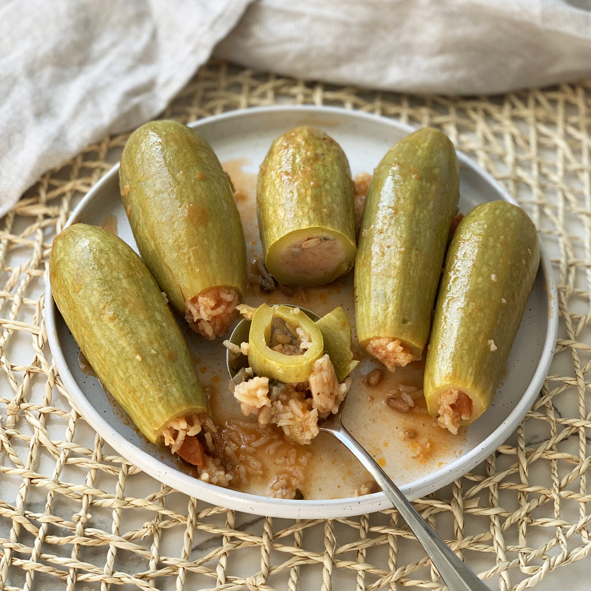

Stuffed Zucchini | محشي كوسة

Description
Creamy, delicious, and rich, a favourite of mine.
Completely vegan, healthy(in moderation), and absolutely delicious Egyptian staple.
Ingredients
- White Zucchini
- A large white onion
- Vegetable stock
- Garlic
- Olive oil
- Fresh herbs. Parsley, mint, and coriander
- Tomato sauce and paste
- Salt and pepper, and if you have them بهارات
Steps
- Prep Zucchini
- Mix the rice with onions, tomato, and spices
- Stuff the leaves
- Cook in vegetable stock
- Enjoy
Home